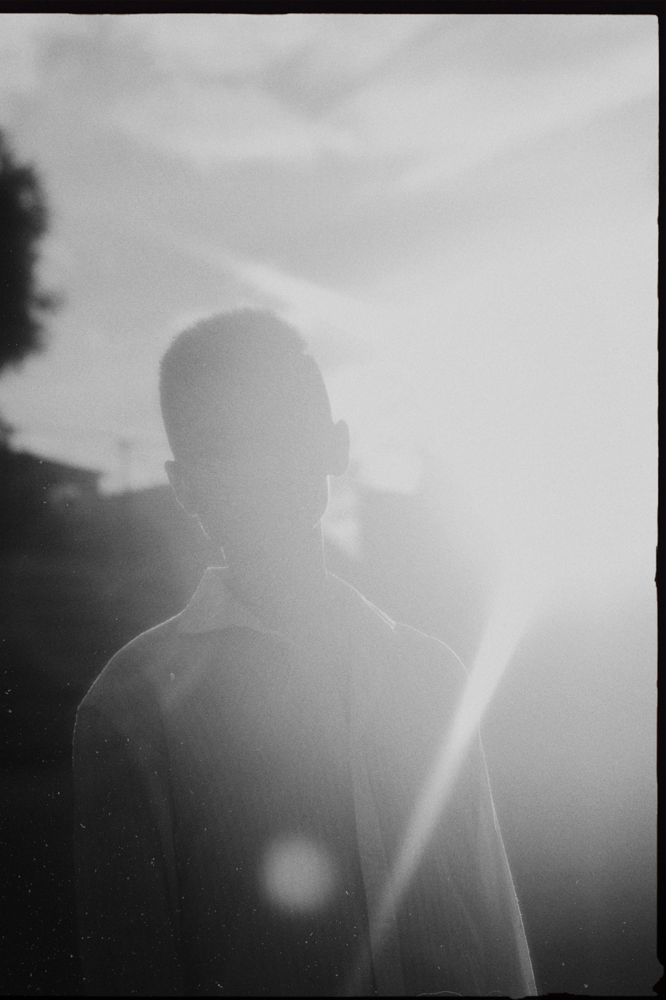

Human Being
I'm Jack
About
This webpage offers a quick and convenient way to know the key things about me.
CUNY BA student
- Majors Math & Natural Science
- Expected Graduation Year 2027
- Email: SHUO.YANG1@baruchmail.cuny.edu
- City: Brooklyn, New York, USA
-
Writing Samples:
From Ego Dissolution to Psychological Transformation: Pathways to Enlightenment
Resume
Education
Wuhan Technology and Business University
University of the People (Online)
University of London (Online & teaching center: Beaconhouse International College Islamabad)
Computer Science
City University of New York
Math & Natural Science
Working Experience
Office of International Relationship Assistant
Nine months
Wuhan Technology and Business University
Teaching Assistant for Foreign Teachers
Nine Months
Wuhan Technology and Business University
Web Developer
Two Years
Descript(ph)
My Journey
I lost all interest in academics in high school. I dropped out during the second year, moved to a big city, and worked as a waiter and part-time film extra. A year later, I decided to pursue business and began self-studying for the national college entrance exam. Six months wasn't enough preparation for my target universities, but I still scored high enough to be accepted into a bachelor's program. However, I felt unsupported at that university. Over time, I rediscovered a childhood dream - to become a scientist, specifically a neuroscientist. I deeply understand that neuroscience holds the promise of unlocking human potential and deepening our understanding of one another, with the power to address challenges on both personal and global scales.
I decided to transfer. I have always believed that studying abroad could be eye-opening and life-changing. When I was nineteen, I traveled alone for the first time and could finally use Google Maps legally. I remember zooming in and out of the world map, wondering about the 99.9% area of the planet Earth I had never been to. I decided to explore South America with the goal of studying at a Spanish-speaking university for my undergraduate degree, because of the affordability and availability of many prestigious schools.
I spent a couple of years traveling across South America and Spain, working remotely as a web developer while learning the Spanish language. I earned a DELE B2 certificate to meet college admission requirements and aimed to study in Argentina or Spain. But in Argentina, after attending a consultation in the immigration office I requested, I received a deportation warning for expressing my desire to enroll in college. Later in Spain, all my documents - including my passport and apostilled certificates - were stolen at the Barcelona airport the moment I arrived in Europe. Without them, I missed the university entrance exam.
While my peers started graduate school or careers, I began my higher education online. I completed one semester at the University of the People and a year of computer science courses through the University of London. I even visited its teaching center in Pakistan. However, these experiences were deeply disappointing, and the teaching center was not any better. Eventually, I took a leap of faith - using all my family's savings and a home-equity loan - to come to CUNY. It has been the most transformative decision of my life.
I am now in the CUNY Baccalaureate for Unique and Interdisciplinary Studies (CUNY BA) program. PhD programs in neuroscience do not require a single specific major, but coursework in the natural sciences, mathematics, and computer science is highly valued. My area of concentration - analogous to a traditional major - is Natural Sciences and Mathematics. I am committed to a life in research, focusing on discoveries that can meaningfully improve people's lives and move society forward.